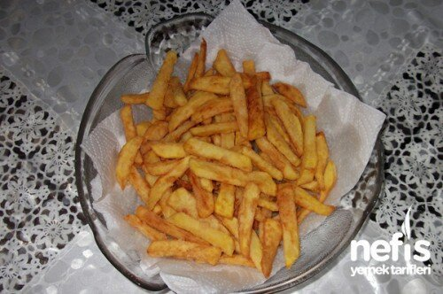

ÇITIR PATATES TARİFİ
Kaç kişilik : 4
Hazırlama süresi : 30dk
Pişirme süresi: 10dk

Malzemeler
- 3-4 orta boy patates
- 1,5 yemek kaşığı un
- 1 tatlı kaşığı mısır nişastası
- 1 paket kabartma tozu
- Tuz
- Sıvı yağ
Adımlar:
- Patatesler soyulup yıkanır. İyice kurulanıp ince dilimler halinde doğranır.
- Üzerine un, nişasta, tuz ve kabartma tozu eklenir, iyice harmanlanır.
- Ve direkt kızgın yağa atılır.
- Ara sıra karıştırarak kızartılır.
- Kızarınca servis tabağına alınır.
- Özellikle et, tavuk yemeklerinin yanına çok güzel yakışıyor.